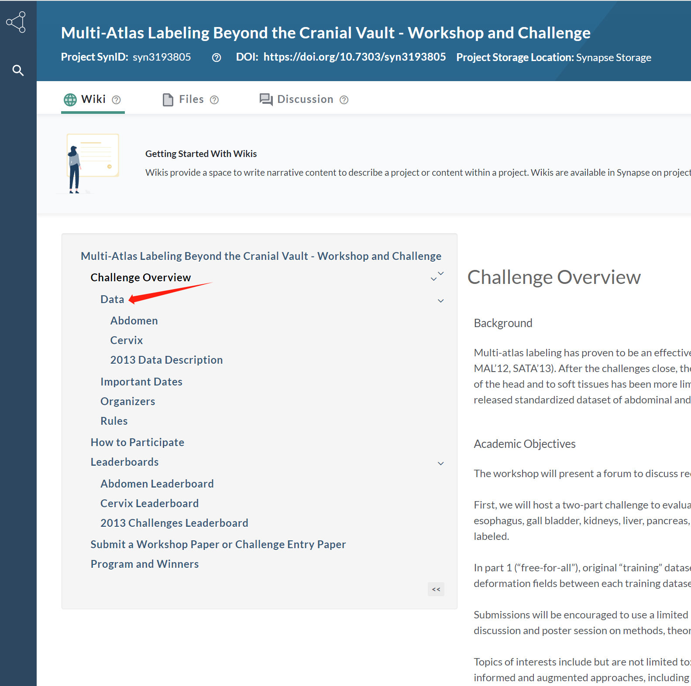
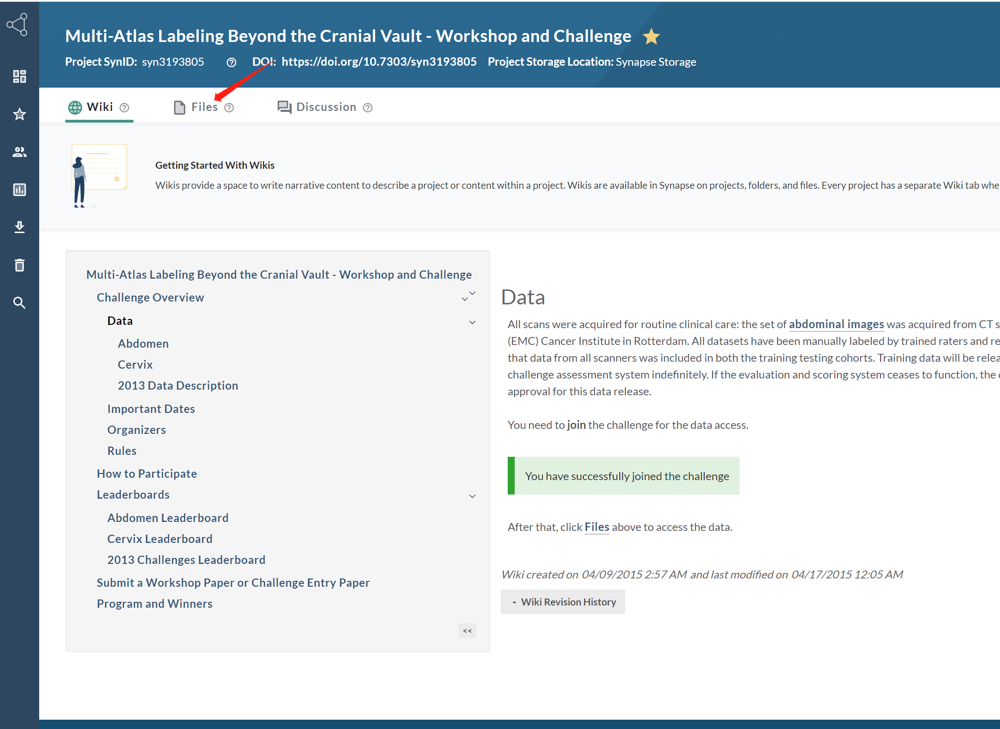
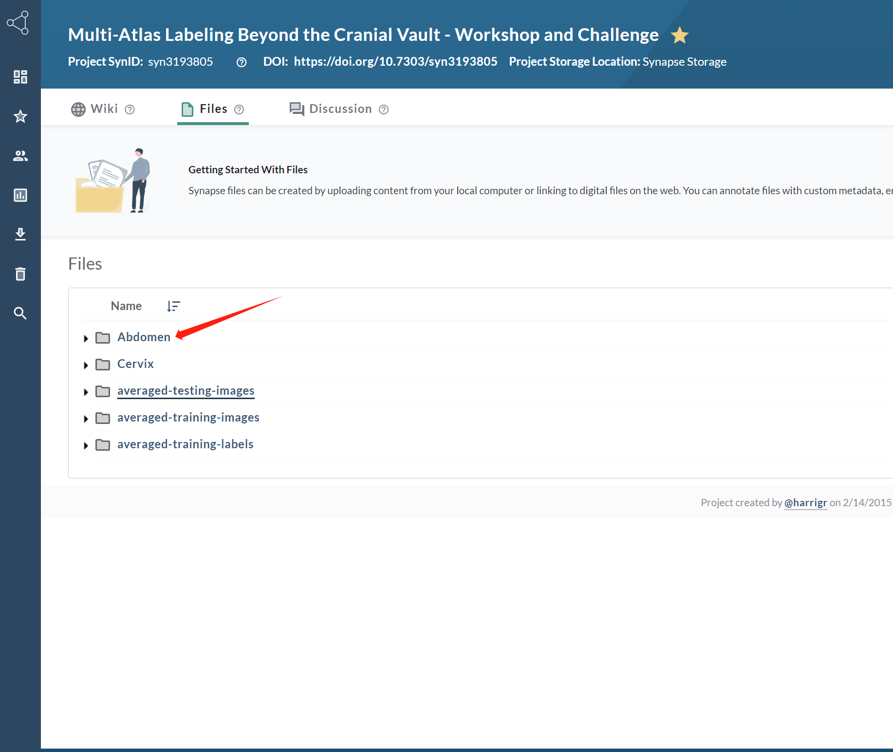
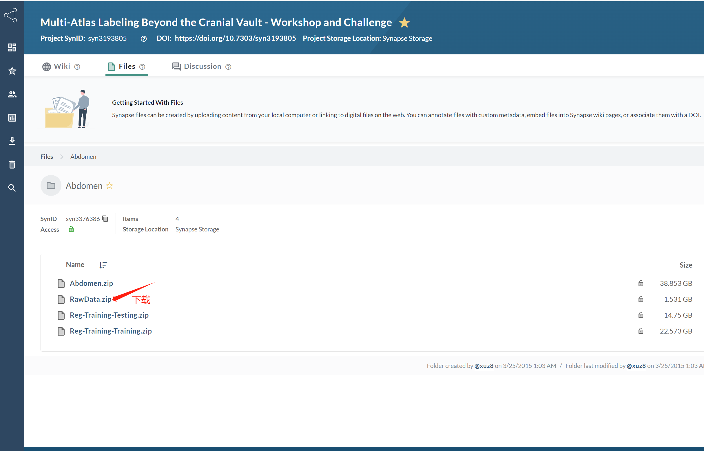

机器学习课程大作业
本项目使用SAM在公开的医疗影像数据集进行实验。
SAM论文链接：https://arxiv.org/abs/2304.02643
SAM官方Repo：https://github.com/facebookresearch/segment-anything
数据集介绍
使用BTCV数据集，可以通过链接下载。数据集共有30个CT影像，其中24个用于训练，6个用于测试。划分好的数据集见：数据集链接。分割的目标包括13个腹部器官，包括脾脏、右肾、左肾、胆囊、食管、肝脏、胃、主动脉、下腔静脉、门脉及脾静脉、胰腺、右肾上腺、左肾上腺。
任务描述
- 使用SAM的官方预训练模型在测试数据的二维切片上实现器官分割。
- 对预训练模型的Decoder在训练数据上微调，与之前的结果进行对比。
- SAM在分割物体时并没有考虑类别，思考如何使模型在分割器官时同时输出类别。模型可输出类别之后，使用grid
points作为prompt分割出测试数据上的各个器官，并评估模型性能，与现有的baseline比较。
- 思考探究：SAM模型还可以如何应用在医疗图像分割任务中？
任务要求
- 使用mDice指标评估模型的性能，即对每个器官分别计算Dice之后取平均值。也可以使用更多指标，但需说明指标的计算方法。
- 对于任务1，比较不同prompt（单点、多点、边界框）的分割效果差异，并写下你的发现。以下是一些prompt参考选取方法：对于单点，可以在ground
truth mask中随机选取，或者选取ground
truth的中心点（即内距离变换最大值处，the
maximal value of the mask’s interior
distance
transform）；对于多点，可以在ground truth
mask中随机选取，或者其中一个点选在ground
truth的中心处；对于边界框，可以使用ground
truth的边界框，或者较之略大的框。prompt的选取方法不作具体要求，合理即可。
- 对于任务2，需写明模型微调时的训练策略以及学习率等必要参数。
- 对于任务3，一个可能的方法是在Decoder的mask query和iou
query之外，加入一个class
query用来预测类别，其他合理的做法行之有效即可。模型有分类功能之后，可对测试集上某个病例的每个二维切片采用grid
points作为prompt，得到每个切片的分割结果后，相同类别便可合成一个3D分割结果。
- 对于任务4，写下自己的思考，也可以根据思考作一些实际的探究。此项为附加项，思考与探究的结果将酌情计入项目的附加分。
提交要求
- 实验报告。包括实验内容、实验结果、结论与分析、程序说明等。
- 实验代码。
附录1：数据集下载



